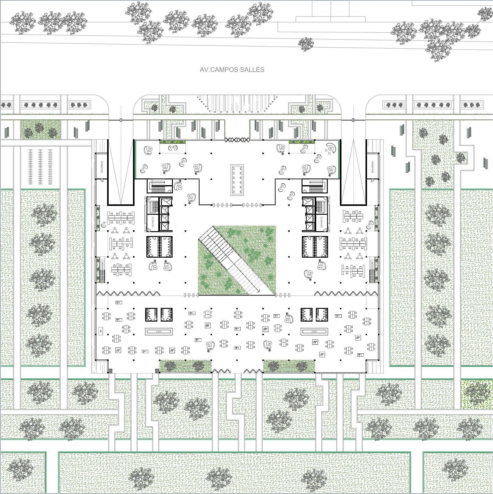
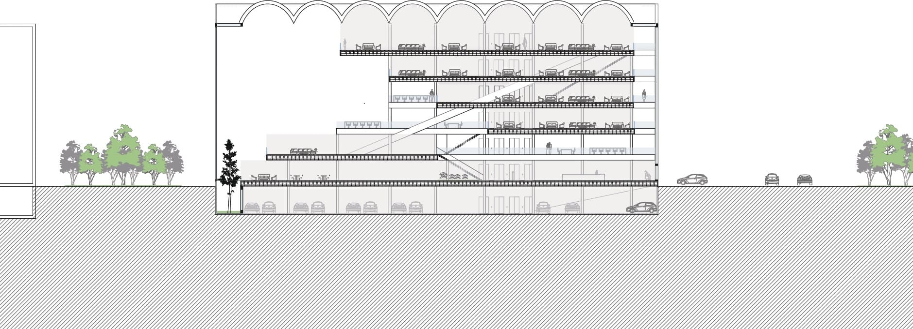
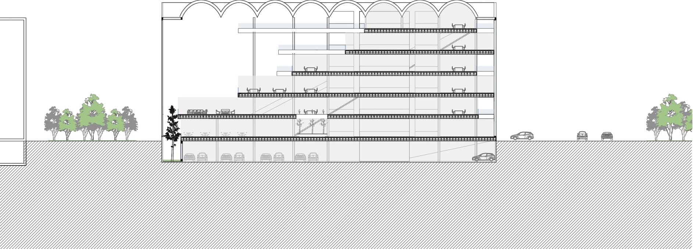
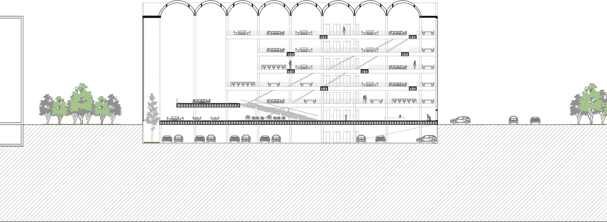
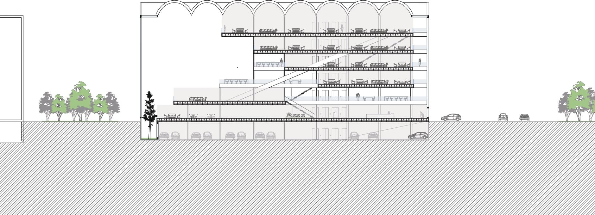
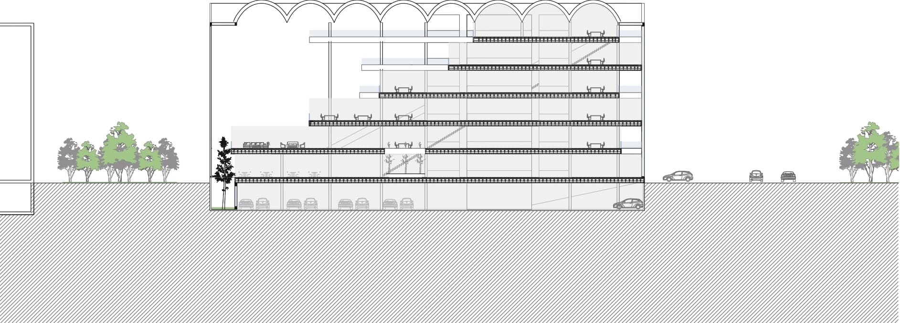
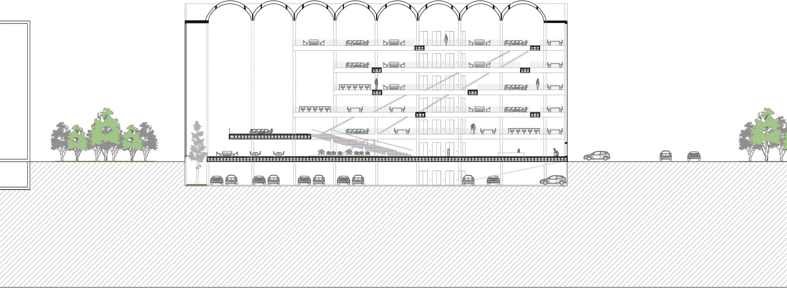
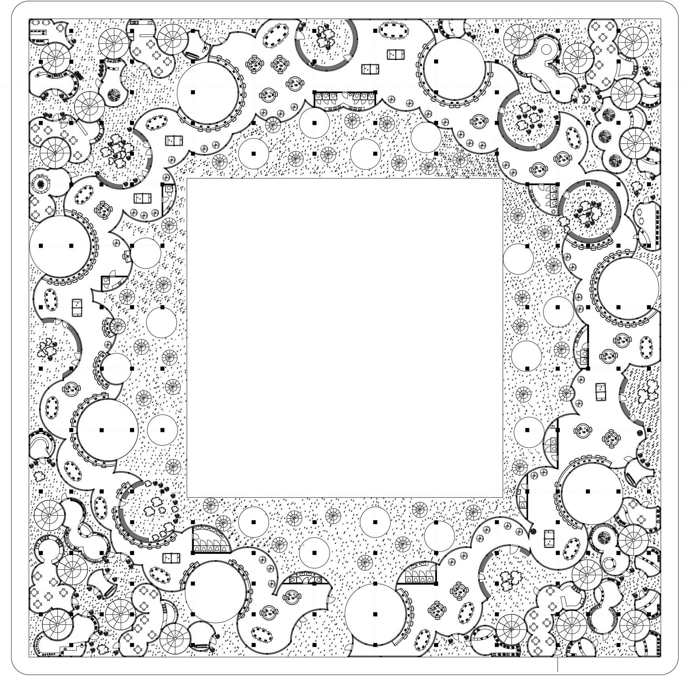

Tesis Proyectual
Proyecto Final de Grado_2024
Profesores: Marcelo Faiden y Sebastián Adamo
La tesis propone la reconversión de edificios de planta profunda en el centro de la ciudad Santiago de Chile, originalmente destinados al uso de estacionamiento vehicular y oficinas en espacios habitables, mediante la implementación de un sistema de patios y vacíos. Este enfoque busca mejorar la habitabilidad, la ventilación, la iluminación natural y la integración urbana, respetando las estructuras existentes y adaptándolas para alojar viviendas accesibles y temporales.
El caso de estudio se centra en los edificios La Merced I, II y III, cuya ubicación estratégica y cercanía a servicios, transporte y universidades los convierten en un potencial catalizador para la revitalización del centro de Santiago. Las estrategias planteadas—circulación, patios y vacíos—generan espacios comunes y privados que promueven la interacción social, reintroducen vegetación en la ciudad y conectan al conjunto con su entorno urbano y natural, contribuyendo a la reactivación económica y social de la zona.

Dibujos Tesis


Renders Tesis


Proyecto Oficina
Proyecto IV_2021
Profesor: Rodrigo Grassi
El proyecto consiste en el diseño de un edificio de oficinas situado en el Parque de la Innovación en Ciudad de Buenos Aires. La idea que impulsó el origen del edificio fue orientarlo hacia el eje verde del centro del parque, como si se tratara de un anfiteatro que mira hacia la naturaleza. Esta idea fue reforzada ya que el sector asignado para el edificio se encuentra ubicado en el centro, entre tres espacios verdes. Se generaron tres cuerpos de oficina, los cuerpos de los costados contienen losas en forma de graderías que miran hacia el eje verde y se achican a medida que se asciende. Mientras que el cuerpo del centro funciona de manera inversa, las losas se alargan a medida que ascienden para acentuar la entrada principal del edificio desde la calle. De esta forma, al entrar por la puerta principal, el espacio se abrirá hacia una plataforma en primer piso que genera un nexo conector con el exterior verde, creando un espacio de conexión y trabajo más desestructurado.
El edificio fue diseñado para la compañía Globant. Para definir los espacios de trabajo, se analizó el funcionamiento de la empresa en otras sedes, optando por una planta libre que integra tanto áreas de coworking como sectores específicos para el trabajo individual.
Alejándose del formato tradicional de oficinas, la empresa busca ofrecer espacios de trabajo más desestructurados para que los empleados se sientan como en casa. Por ello, muchos de los sectores de trabajo están compuestos por sillones, mesas o balcones con vegetación, generando un ambiente más relajado para los usuarios.
 





Proyecto Vanlo
Proyecto I_2020
Profesor: Santiago Giusto Van Campenhaut
El proyecto organiza dentro de una manzana cinco programas -viviendas, co-working, deporte, comercio y espacio verde- se estudia la relación de conexión y desconexión de estos espacios mediante el agujereamiento progresivo del edificio.
Los programas se desarrollan en tres pisos más terraza y subsuelo, y se ven condicionados por un vaciamiento circular progresivo que atraviesa el edificio y genera a través de la concavidad y convexidad diversos espacios de colectividad. La manzana se regula en una grilla cuadriculada, que determina la estructura, generando una planta libre, donde únicamente hay vigas y columnas. Por otro lado, si se requiere colocar muros de mampostería, éstos deben atenerse a la grilla, mientras que para generar cerramientos fuera de la cuadrícula, éstos deben ser de vidrio. Por lo tanto, al generar viviendas de formas particulares, éstas son mayormente de vidrio y su nivel de privacidad se regula por medio de los vacíos.
Los vacíos se encargan de ordenar los programas pero a su vez responden a una serie de normativas internas. Hay tres tamaños de agujeros y según los mismos se define su uso. Los de menor diámetro funcionan como escaleras y los medianos para el ingreso de aire y luz, mientras que los de mayor tamaño se utilizan para generar privacidad, es decir, lejanía entre programas. De esta manera se genera un espacio controlado de conexión en altura entre programas, regulando la privacidad y acceso necesarios para cada espacio.
